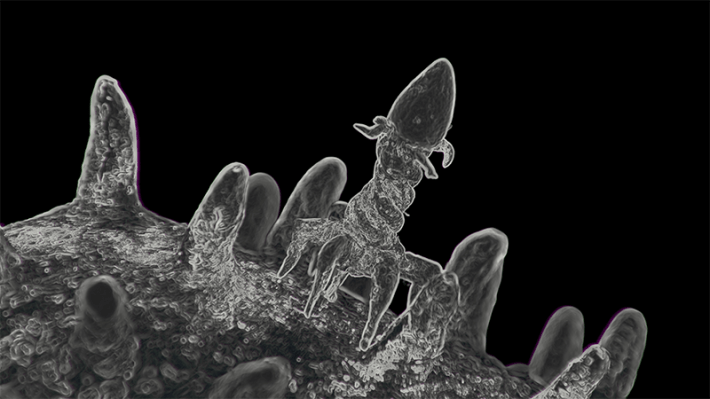

A young boy in Nebraska may well have been saved thanks to a particular piece of rotten eggplant collected in South Africa. And a virus it contained.
Like many other kids, Hudson Campbell was no stranger to ear infections. But his were incredibly persistent. Antibiotics usually seemed to help initially, but once the course was over, the infections would come roaring back. Born in 2017, by age 2, he had already gotten ear tubes surgically implanted to drain the excess fluid the infections produced. A second set of tubes inserted in 2020 fell out within weeks—his infected ears had too much fluid in them.
That fall, doctors took a sample of bacteria growing in Hudson’s ears. The result was troubling: The bacteria were Mycobacterium abscessus. Frequently resistant to antibiotics, not many known drugs can fight the pathogen. The infection threatened his hearing, but also, if it spread, could quickly make its way beyond his ears.
Hudson’s bacterium is, of course, far from the only drug-resistant infection spreading. Its relative, Mycobacterium tuberculosis, which causes TB, has become notoriously resistant to antibiotics. Others include strains of Salmonella and Staph. Each year, some 2.8 million Americans struggle with antibiotic resistant infections and more than 35,000 people die from them.
Yet, many of these infections do have cures. Known as bacteriophages, bacteria-slaying viruses just don’t yet exist on the shelves of hospital pharmacies. Instead, they lurk in strange places, like sewage, soil, and decaying vegetables.
By summer 2021, just six months after doctors identified M. abscessus in his middle ears, Hudson’s hearing started to disappear. One morning he had woken up and said, “Mom, I can’t hear you.” His mother, Kylie Campbell thought he was just being a mischievous 3-year-old. But three days later, the family was coming back from vacation, and Hudson was sitting in the back seat with his two younger sisters. He kept complaining that he couldn’t hear the video playing in the car. “I turned it up almost as loud as it could go, and he could barely hear the TV,” Kylie Campbell recalls. Sitting in the car with the sound blaring, she realized he meant it. That week Hudson had lost much of his hearing.
Doctors weren’t sure if Hudson’s infection or the antibiotics used to treat it caused his hearing loss. Late in 2020, Hudson had been outfitted with a so-called PICC line—a peripherally inserted central catheter—a long, thin, flexible tube that went into his upper arm and threaded into a large vein near his heart, so he could receive an antibiotic called amikacin, which can only be given intravenously. But in addition to wrecking his gut microbiota—causing such bad gastrointestinal side effects he could barely leave the house to participate in normal little kid life—amikacin can also cause hearing loss.
Bacteriophages have their own evolutionary incentive to keep up with and outsmart their prey.
Whether it was the drugs, the infection, or a combination, Hudson’s eardrums became so damaged they could no longer transmit sound to the auditory nerve, which passes it to the brain. Hudson became profoundly deaf in his left ear and severely deaf in his right. His hearing could be restored with cochlear implants—electronic devices that bypass the damaged parts of the ear and “talk” to the auditory nerve directly—but whether they would work properly amid a raging M. abscessus infection was the question. Doctors were also worried that if amikacin stopped working, Hudson’s infection would spread.
The bacteria did spread, next infecting Hudson’s mastoid bone, a part of the skull located behind the ear. His parents took him to the Mayo Clinic for mastoidectomy, surgery that cleaned the dead cells from the bone with the hope of clearing the infection, too. He seemed to improve. In 2022, his medical team decided he was ready for a cochlear implant in his left ear, where he had lost almost all hearing. Time was of the essence because without regular stimuli, the auditory nerve could quickly atrophy. The surgery went well, but the implant didn’t last—the infection returned with a vengeance. “About six to eight weeks later, the implant fell out of his ear because the infection was so bad,” Kylie says.
On Good Friday of 2022, Mayo Clinic surgeons took the implant out of Hudson’s left ear and implanted another into his right. The new implant took well, but Hudson’s left ear was not getting better.
Back in Nebraska, a pediatrician who had treated Hudson at the Children’s Nebraska hospital in Omaha named Bradford Becken had a bold idea: Enlist a virus to fight off the aggressive bacteria.
Evolution has typically been our enemy in the world of antibiotics. These drugs exert their lab-crafted killing pressure on bacteria, prompting the microbes to evolve new ways to defend against or disarm the medications. Some bacteria can eject antibiotics from their cells before they can act, others produce enzymes that cut antibiotic molecules to shreds. And with survival of the fittest as the law of the microscopic land, the more antibiotics we use, the more selective pressures they exert, the tougher the survivors—and the less effective our antibiotics.
Evolution, however, could be our collaborator in a different, dynamic class of treatments. Bacteriophages, the viruses that attack bacteria only and are harmless to humans, have their own evolutionary incentive to keep up with and outsmart their prey. Unlike broad-spectrum antibiotics, which typically target whole classes of bacteria in our bodies—the bad and the good, hence their negative side effects, such as diarrhea and yeast infections—phages are very targeted, preying on very specific bacteria. This is excellent news for our bodies and our commensal microorganisms.
But it can also make finding the right phages tricky. Even within one strain of M. abscessus, there can be big enough variations so that not every M. abscessus-targeting phage may work efficiently enough to kill off the bacterium, explains Graham Hatfull, a professor of biotechnology at the University of Pittsburgh whose research focuses on mycobacteria species. Hatfull also runs SEA-PHAGES, a research course for which students search through soil, compost, and other substances to identify and catalog novel bacteria killers in different parts of the planet.
And that’s where the expired eggplant comes in. Some years ago, a SEA-PHAGES student in South Africa was digging through a pile of garbage, from which they fished out a half-rotten eggplant chunk. Living on the chunk was a phage that was fairly adept at attacking M. abscessus. The student noted the phage activity against M. abscessus, named the phage Muddy, and added it to the collection, which today totals about 28,000 strains of bacteria-killers.

BACTERIA-EATERS:Bacteriophages, whose name was inspired by the Greek word phagein (“to devour”) are viruses that have evolved to prey on bacteria. In 1919, French microbiologist Felix d’Herelle isolated one strain of these targeted viruses and used it to treat three children dying from dysentery. All three were cured. Credit: shoma81 / Shutterstock.
Becken had heard about phage therapy, but never used it before, so he reached out to Hatfull to ask if there might be a phage in his collection to try against Hudson’s M. abscessus. It wasn’t the first such email Hatfull had received. He had created a few phage treatments before for similarly stubborn cases. If Hatfull’s lab found the right phage, Hudson would become the first young child in the United States—that his medical team was aware of—to be treated with phage therapy.
He wouldn’t be the first in medical history, though. In fact, the first documented pediatric use of phage therapy was more than a century ago. The children, three brothers aged 3, 7, and 12, were treated in a children’s hospital in Paris in 1919. The boys were dying from dysentery, caused by a Shigella bacterium, which had already killed their sister. Antibiotics hadn’t yet been discovered and wouldn’t become widely available for another three decades. But French microbiologist Felix d’Herelle had just zeroed in on something that killed the dysentery bug, which he correctly identified as a virus that preys on bacteria.
That insight struck when one of d’Hérelle’s dysentery patients managed to beat the illness seemingly on his own. As he got better, d’Hérelle noticed that Shigella began to disappear from the patient’s stool samples. D’Hérelle seeded the stool samples onto petri dishes with plenty of beef bouillon to help feed the deadly bacterium, but Shigella dwindled there also, leaving behind clear patches where it originally had been. Something was killing off the bacteria. So d’Hérelle devised a clever trick to isolate the mysterious agent.
He passed the remaining bouillon through a Pasteur-Chamberland filter with holes so small that fluids could trickle through, but bacteria couldn’t. He ended up with a clear liquid, seemingly lacking all microbial life. But when he added Shigella back into the liquid, the bacteria were gone by the next day. “They dissolved like sugar in water,” d’Hérelle later wrote. “What caused my clear spots was in fact an invisible microbe.”
He named the curative agent “bacteriophage,” from the Greek word phagein, which means to devour or eat. D’Hérelle and his colleagues tested phages on themselves first, found no adverse effects, and then gave the medicine to the children, all of whom recovered within days. Later, d’Herelle used phages to treat a variety of infections, including the plague, caused by the bacterium Yersinia pestis, which had no cure.
In the 1920s and 1930s, medics in Europe, North America, and the Soviet Union successfully used phages to treat a range of infectious diseases, including dysentery, cholera, and staph. However, in the U.S., phages eventually fell out of favor, partially because of the advent of more broad-spectrum antibiotics and partially because phages had to match the exact subtype of bacteria the person was infected with to be effective. So with effective antibiotics on hand by the mid 20th century, many U.S. physicians grew less inclined to turn to phage therapy, some even expressing doubt as to their efficacy.
As antibiotic resistance grew, it became clear that alternatives were needed.
Still, in countries of Eastern Europe and the Soviet Union, phages were used alongside antibiotics, especially when the latter failed to work. In Georgia, which was then part of the Soviet Union, health officials created an entire research institution, today called George Eliava Institute of Bacteriophages, Microbiology, and Virology devoted to the production and study of bacteriophages. In the 1970s, Georgian researchers managed to cultivate a phage active against methicillin-resistant staphylococcus aureus, or MRSA, a dreaded superbug. When the Soviet Union fell apart, Georgian scientists began to arrive in the U.S., bringing their bacteriophage knowledge with them.
But decades of distaste for phage therapy, combined with the Cold War cast a pall on bacteriophages and other corners of Soviet biomedical research as “commie medicine,” made their uptake slower in the U.S. Yet, as antibiotic resistance grew, it became clear that alternatives were needed. In 2016, for the first time, the FDA greenlighted a phage treatment for an experimental case. It was granted for Thomas Patterson, currently a psychiatry professor at the University of California, San Diego, who was near death, infected by bacteria that appeared resistant to all known antibiotics. When phages vanquished his bacteria, saving his life, a paradigm shift ensued. Over the past several years, bacteria eaters have been climbing their way back in the U.S. from scientific obscurity. But slowly.
Part of the challenge is still finding the right match, which is typically done by pitting phages and bacteria against each other in the lab and looking for a winner. So Becken sent Hatfull a sample of Hudson’s bacteria. At Hatfull’s lab, workers tested a number of phages against the sample, but none were successful. A few weeks later, Becken sent another sample—with the same result. But Becken was tenacious and sent yet another one. Hudson’s third sample found a match, a virus that had descended from the one collected from that mushy eggplant. It was Muddy’s progeny.
When Becken learned that Hatfull’s lab found the match, he was excited and nervous. “It was the first phage patient that I’ve ever had, and the first phage patient this hospital has ever had,” he reflects. “And I was very hopeful, because I didn’t know what would come after a phage if it didn’t work. I wasn’t sure what else was out there.”
Becken filed an Investigational New Drug request with the FDA, and in May of 2023, Hatfull’s lab prepared Hudson’s phages.
Hudson’s phages arrived at the Children’s Nebraska hospital in little glass bottles, ready to be administered intravenously and directly into his left ear to give M. abscessus a double blow. Hudson would also remain on his antibiotics for an extra punch. Phages and antibiotics can work synergistically, each killing the respective susceptible bacterial population. “Hudson was admitted to the hospital because you can’t send a phage to CVS,” Becken says, adding that this also afforded extra protection in case he had any side effects during his first few phage applications.
He had none, so the rest of his treatments were done as outpatient visits, and the results were fast. “It was just amazing to watch,” Kylie says. “Within the first month of starting it, his ear had completely dried up. We went to Mayo, and they said his ear was better than it had looked in years. You could just tell he was feeling better.”
Hudson received phages for several months. “I probably treated Hudson with the phage longer than he needed to be treated,” Becken says, but he was worried that M. abscessus may rebound once therapy ceased, and he wasn’t taking any chances. Around September 2023, Becken deemed Hudson cured and stopped the phages. The bug did not return. A few months later, Hudson got the cochlear implant in his left ear, and it stayed for good.
Since Hudson, more patients at Children’s Nebraska have received phage therapy and some are currently being evaluated for the treatment, Becken says. “Phages are fascinating, because I see issues with antibiotic resistance every day, and every time you use an antibiotic, you increase antibacterial resistance.” Becken says.
Bacteria can develop resistance to phages, too, but phages will respond in kind, boosting their attack prowess. “Bacteria and phages have been racing against each other for millions of years,” explains Sandro Sulakvelidze, a Georgian expat and researcher who founded Maryland-based phage company Intralytix in 1998. Sulakvelidze’s company manufactures phage spray used in the food industry to eliminate pathogens such as listeria, salmonella, and campylobacter. “All we need to do is to sic them on each and harvest the winner.”
That’s exactly what happened in Hudson’s case, explains Hatfull. The original Muddy phage wasn’t effective against Hudson’s M. abscessus strain, but its progeny was. “We kind of played this battle between the bacteria and the phages,” he says, which made the phage evolve to be a better killer.
This approach to battling bacterial infections will likely be increasingly important. Fighting antibiotic-resistant infections already costs upward of $4.6 billion in healthcare costs in the U.S. annually. And the death toll is climbing. Experts warn that between now and 2050, antibiotic-resistant superbugs will claim 39 million lives around the world. The United Nations has an even grimmer prediction: 10 million deaths annually by 2050.
For Kylie and her husband Gregg, seeing Hudson living his life like most other children was a gift. Before the phage therapy, “Gregg and I were almost at the point of withdrawing all medications because it was hurting Hudson physically so bad, and we felt like we were never getting any better,” she says. “And now he’s enjoying hearing with both ears with 95 percent accuracy.”
Today, Hudson, now 9, plays multiple sports, and one of his favorite activities is swimming. “From a mom’s perspective, I would say that without phage therapy, we would have never cleared the infection,” Kylie says. “It was a game changer.” Thanks to a virus hidden away in a rotten eggplant. 
Lead image: Kristina Savelieva / Shutterstock
References
- Original Article: https://nautil.us/the-cure-hiding-in-a-rotten-eggplant-1242737/